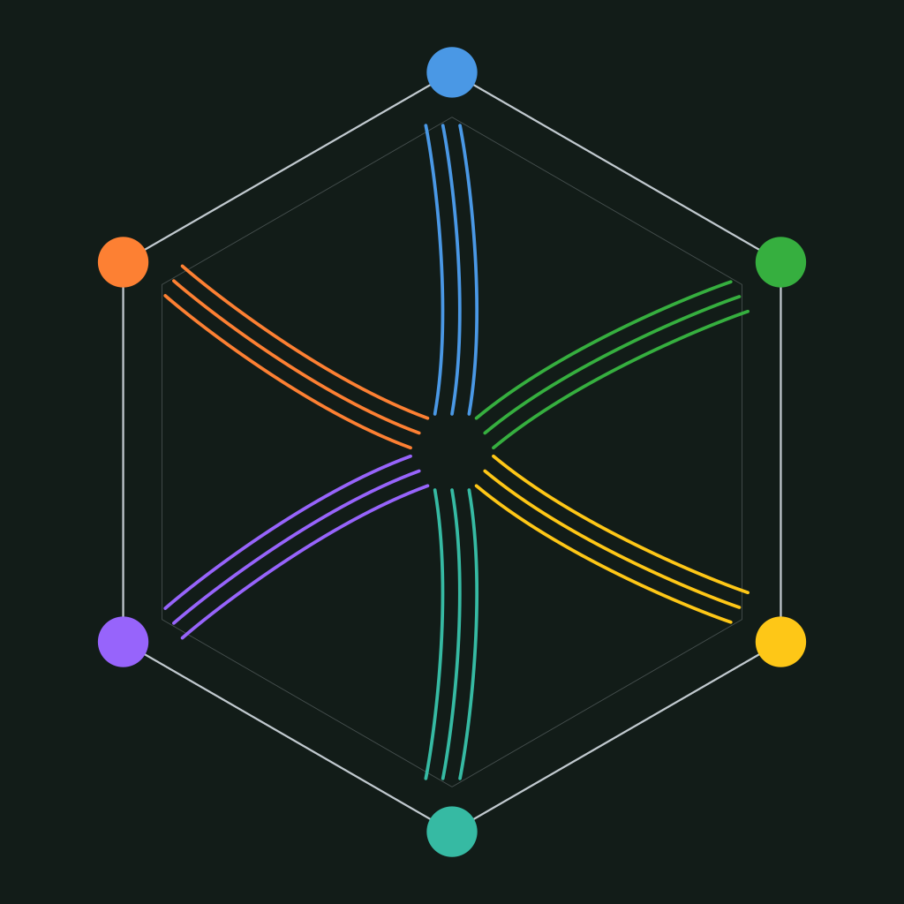

Install the core tractoverse packages
Source:R/install_core_packages.R
install_core_packages.RdConvenience installer for the packages that make up the tractoverse family: `fiber`, `master`, `rtists`, `riot`, `toad` and `bot`. These are also listed in `Imports:`/`Remotes:` of the meta-package (so `install_github()`/`pak` resolve them automatically); this function gives an explicit, user-run way to bring in (or update) any selection of them.
Usage
install_core_packages(
packages = names(tractoverse_packages()),
force = FALSE,
branch = "main",
repos = getOption("repos"),
...
)Arguments
- packages
Character vector of package names. Defaults to all core packages (`names(tractoverse_packages())`).
- force
Logical. If `FALSE` (default) already-installed packages are skipped; if `TRUE` they are reinstalled (upgraded).
- branch
Branch/ref to install from GitHub for packages not on CRAN. Defaults to `"main"`.
- repos
CRAN repositories to use, passed to `install.packages()`. If `NULL` the user's configured `options("repos")` is used.
- ...
Additional arguments passed to `install.packages()` (CRAN path) or `remotes::install_github()` (GitHub path).